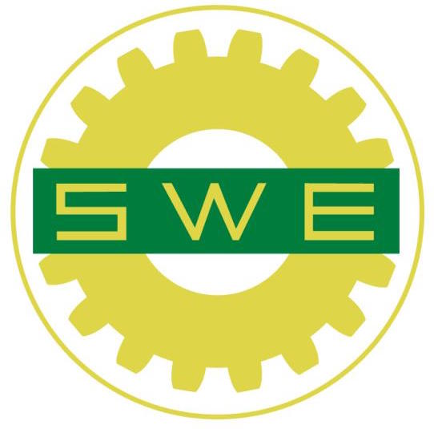
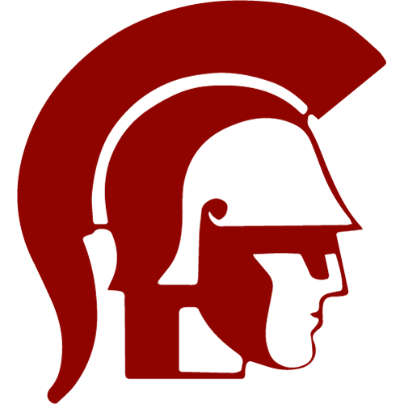
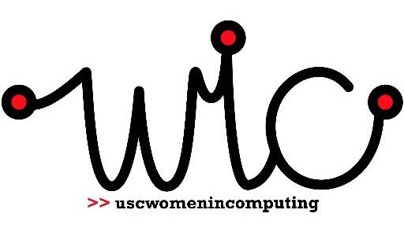

ACM

I am a part of ACM^2, ACM's leadership development program, in which we plan and run a large event for the organization, and I attend E-Board meetings to assist the other officers in preparing events.
CORPUS CALLOSUM

Corpus Callosum combines art and engineering to produce creative projects each semester. Right now, I'm working on a team to engineer LED lily pads to mimic an illusion of an underwater pond.
SWE
I am a member of the Society of Women Engineers, in which we promote female involvement and interest in the engineering fields.
THE SPIRIT OF TROY
I am a current trumpet player in USC's Trojan Marching Band. We perform all over the country, from Dallas and San Francisco so far. Fight On!
WIC
I am also in Women In Computer Science, or WIC, that brings together women in the field here at USC.